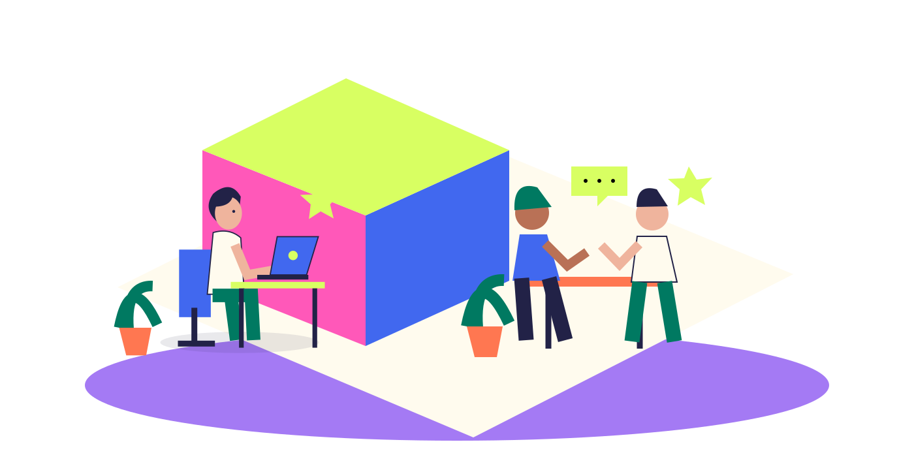

本文へ移動
✳
LITAXIA
ONLINE
LEARNING
学べること
学び方
私たちの想い
好きから、はじめる
↗
メニュー ＋
学べること ↗
学び方 ↗
私たちの想い ↗
小さな島をめぐる ↗
LEARN. CREATE. BE YOU.
それぞれの「好き」が、
動き出す。
つくる人。学ぶ人。ひと息つく人。
気になる場所を、のぞいてみよう。
トップへ戻る
↗

好きから
はじめよう。
街を見渡す
つくる
描く
つながる
↶
↷
動きを止める Ⅱ
それぞれの「好き」が、動き出す。